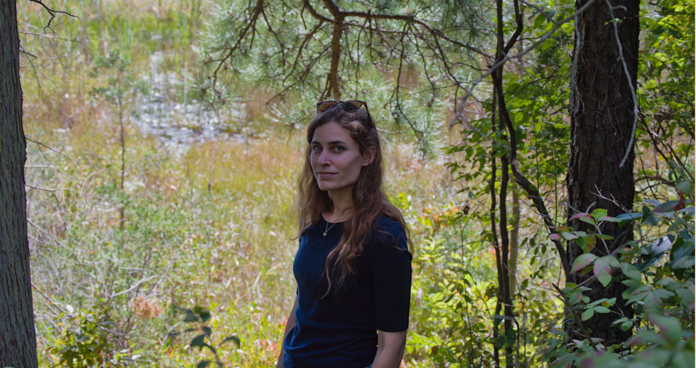

Candace
The Artist
Creative Mist Artistry is my portfolio shaped by atmosphere, light, and quiet moments. New pieces are added as they are completed.
Most works are created in acrylic, influenced from a nature-centered upbringing and a lasting connection to the Pine Barrens.
Commissions are accepted selectively, depending on timing and fit. Prints available soon.
